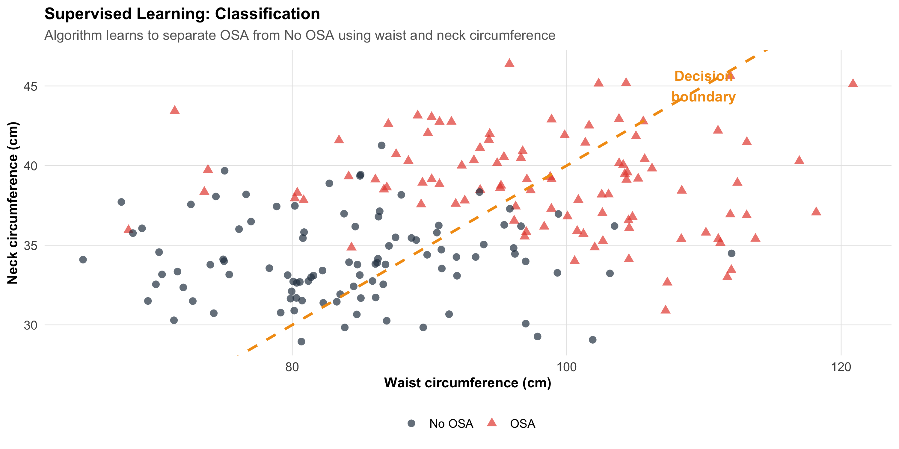
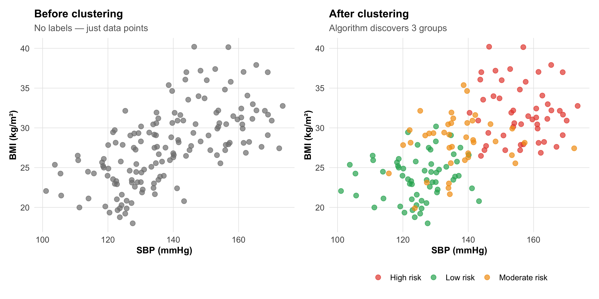
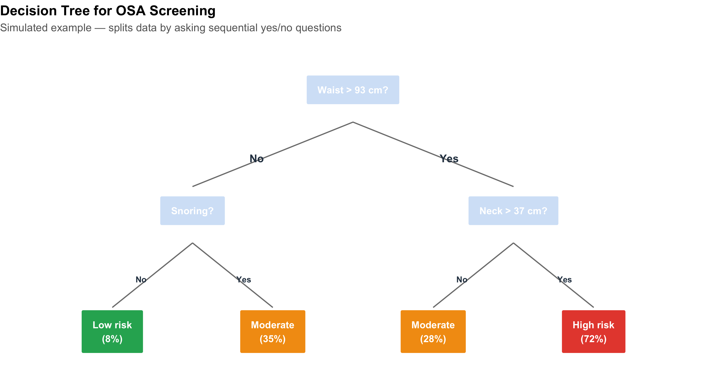
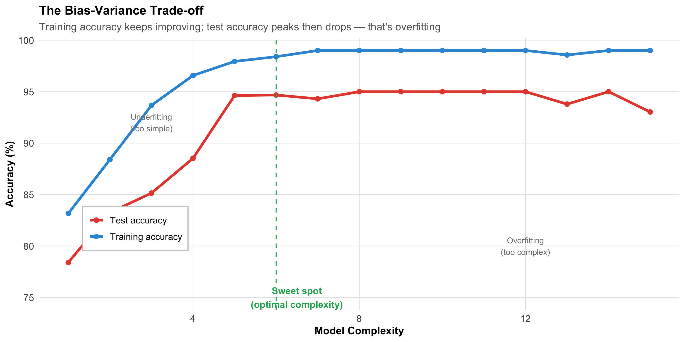
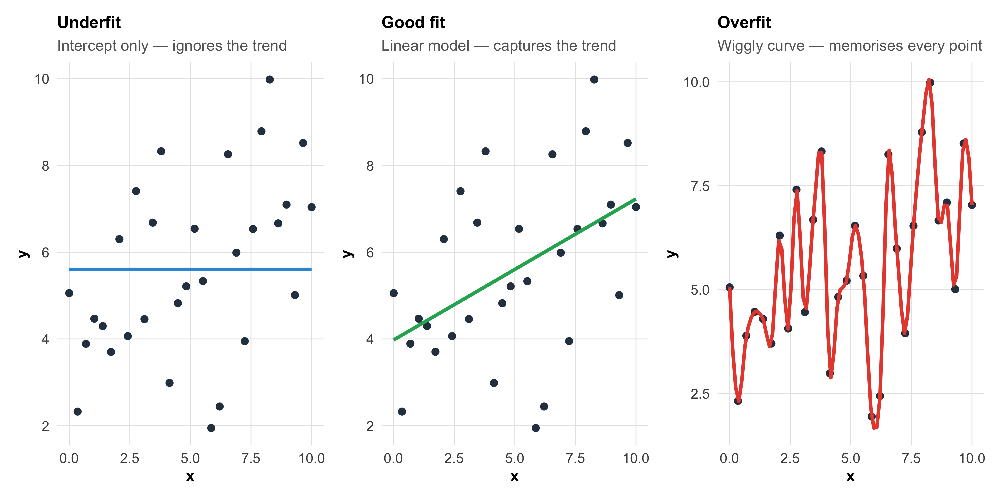
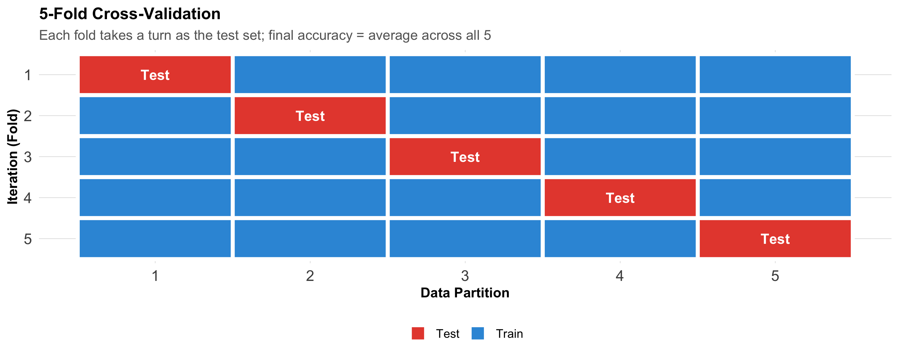
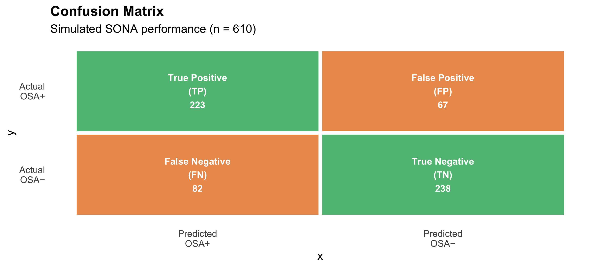
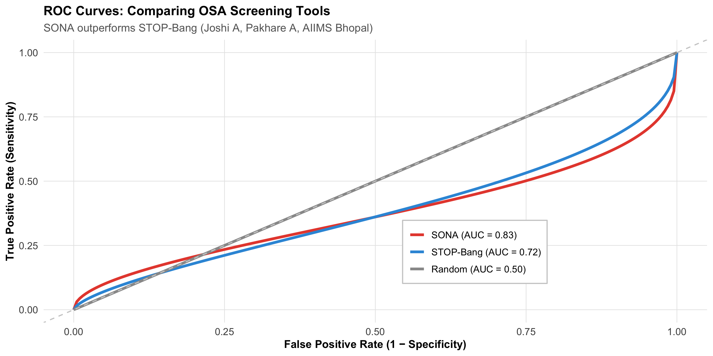

Distinguish between supervised and unsupervised learning
Understand common algorithms: logistic regression, decision trees, random forests
Explain the bias-variance trade-off and why overfitting is dangerous
Interpret model validation metrics (accuracy, AUC, sensitivity, specificity)
Understand training, validation, and test sets — why splitting data matters
Evaluate ML claims in medical literature critically
Recognise limitations and ethical concerns of ML in healthcare
Identify promising Indian applications of ML in medicine
16.2 Clinical Hook
When the AIIMS Bhopal team developed the SONA questionnaire for OSA screening (Joshi A, Goyal A, Pakhare A et al., J Sleep Res 2025), they followed a workflow that is fundamentally a machine learning pipeline:
Data: 1,015 adults from the BLESS cohort, each with polysomnography results and clinical variables
Split: Training set (n = 732) and testing set (n = 244)
Models: Four predictive models were built and compared
Selection: The best-performing model (based on AUC = 0.83) was chosen
Validation: Performance was confirmed on the held-out test set
Deployment: The SONA scoring system was derived from model coefficients
This is machine learning in action — even though the researchers used logistic regression, not a neural network. The key insight: machine learning is not about fancy algorithms. It’s about the discipline of training on one dataset and testing on another.
Reference
Joshi A, Goyal A, Pakhare A, et al. Development and Validation of the SONA Questionnaire: A Gender-Specific Screening Tool for Moderate-to-Severe OSA. J Sleep Res 2025.
16.3 Part 1: What Is Machine Learning?
The Core Idea
Machine learning (ML) is the use of algorithms that learn patterns from data to make predictions or decisions — without being explicitly programmed with rules.
In medicine, this means:
Input: Patient data (symptoms, lab values, imaging, demographics)
Algorithm: Learns the relationship between inputs and outcomes
Data-driven (let the data determine the best model)
Interpretability
Usually high (coefficient = effect size)
Variable (logistic regression: high; deep learning: low)
Sample size
Works with smaller samples
Often needs large datasets
Validation
Confidence intervals, p-values
Train/test split, cross-validation, AUC
Overfitting risk
Managed by theory
Managed by held-out test data
The Overlap
Logistic regression is both a statistical method and a machine learning algorithm. The difference is not in the math — it’s in how you use it. If you fit it to understand risk factors (inference), that’s statistics. If you fit it on training data and evaluate on test data to build a prediction tool (like SONA), that’s machine learning.
16.4 Part 2: Supervised vs Unsupervised Learning
Supervised Learning
The algorithm learns from labelled examples — you tell it the correct answer for each training case.
Code
# Simulated classification: OSA vs no OSAset.seed(42)n_pts<-200osa_data<-tibble( waist =c(rnorm(100, 98, 10), rnorm(100, 85, 10)), neck =c(rnorm(100, 39, 3), rnorm(100, 34, 3)), osa =factor(rep(c("OSA", "No OSA"), each =100)))ggplot(osa_data, aes(x =waist, y =neck, color =osa, shape =osa))+geom_point(size =2.5, alpha =0.7)+scale_color_manual(values =c("OSA"="#e74c3c", "No OSA"="#2c3e50"))+# Decision boundary (approximate)geom_abline(intercept =-10, slope =0.5, linetype ="dashed", color ="#f39c12", linewidth =1)+annotate("text", x =110, y =45, label ="Decision\nboundary", color ="#f39c12", fontface ="bold", size =4)+labs(title ="Supervised Learning: Classification", subtitle ="Algorithm learns to separate OSA from No OSA using waist and neck circumference", x ="Waist circumference (cm)", y ="Neck circumference (cm)", color =NULL, shape =NULL)+theme_clean()

Types of supervised learning:
Task
Output
Example
Classification
Category (disease/no disease)
SONA: moderate-severe OSA vs not
Regression
Continuous number
Predict AHI score from clinical variables
Unsupervised Learning
The algorithm finds hidden structure in data without labels — nobody tells it the correct answer.
Code
# Simulated clusteringset.seed(42)cluster_data<-tibble( sbp =c(rnorm(60, 125, 8), rnorm(50, 155, 10), rnorm(40, 140, 12)), bmi =c(rnorm(60, 24, 3), rnorm(50, 32, 4), rnorm(40, 28, 3)), cluster =factor(c(rep("Low risk", 60), rep("High risk", 50), rep("Moderate risk", 40))))p_before<-ggplot(cluster_data, aes(x =sbp, y =bmi))+geom_point(size =2.5, color ="gray50", alpha =0.7)+labs(title ="Before clustering", subtitle ="No labels — just data points", x ="SBP (mmHg)", y ="BMI (kg/m²)")+theme_clean()p_after<-ggplot(cluster_data, aes(x =sbp, y =bmi, color =cluster))+geom_point(size =2.5, alpha =0.7)+scale_color_manual(values =c("Low risk"="#27ae60", "Moderate risk"="#f39c12","High risk"="#e74c3c"))+labs(title ="After clustering", subtitle ="Algorithm discovers 3 groups", x ="SBP (mmHg)", y ="BMI (kg/m²)", color =NULL)+theme_clean()p_before+p_after

Types of unsupervised learning:
Task
What it does
Example
Clustering
Groups similar patients
Phenotyping hypertension subtypes
Dimensionality reduction
Compresses many variables into few
PCA on gene expression data
Anomaly detection
Finds outliers
Detecting unusual lab patterns
16.5 Part 3: Common Algorithms — A Clinician’s Guide
1. Logistic Regression (The Familiar One)
You already know this from Module 11. In the ML context:
How it works: Fits a linear equation, then applies the logistic function to get a probability between 0 and 1
Strengths: Interpretable coefficients (odds ratios), works with small datasets, well-understood
Weakness: Can only learn linear decision boundaries
The SONA questionnaire is based on logistic regression — the coefficients were converted into a simple point score.
2. Decision Trees
Code
# Visualise a simple decision tree as a flowcharttree_df<-tibble( x =c(5, 2.5, 7.5, 1.25, 3.75, 6.25, 8.75), y =c(10, 7, 7, 4, 4, 4, 4), label =c("Waist > 93 cm?","Snoring?", "Neck > 37 cm?","Low risk\n(8%)", "Moderate\n(35%)","Moderate\n(28%)", "High risk\n(72%)"), is_leaf =c(FALSE, FALSE, FALSE, TRUE, TRUE, TRUE, TRUE), fill =c("#d4e4f7", "#d4e4f7", "#d4e4f7","#27ae60", "#f39c12", "#f39c12", "#e74c3c"))ggplot(tree_df)+geom_label(aes(x =x, y =y, label =label, fill =fill), size =3.5, fontface ="bold", color ="white", label.padding =unit(0.4, "cm"))+scale_fill_identity()+# Branchesgeom_segment(aes(x =5, xend =2.5, y =9.2, yend =7.6), color ="gray50")+geom_segment(aes(x =5, xend =7.5, y =9.2, yend =7.6), color ="gray50")+geom_segment(aes(x =2.5, xend =1.25, y =6.2, yend =4.6), color ="gray50")+geom_segment(aes(x =2.5, xend =3.75, y =6.2, yend =4.6), color ="gray50")+geom_segment(aes(x =7.5, xend =6.25, y =6.2, yend =4.6), color ="gray50")+geom_segment(aes(x =7.5, xend =8.75, y =6.2, yend =4.6), color ="gray50")+# Yes/No labelsannotate("text", x =3.5, y =8.3, label ="No", fontface ="bold", color ="#2c3e50")+annotate("text", x =6.5, y =8.3, label ="Yes", fontface ="bold", color ="#2c3e50")+annotate("text", x =1.7, y =5.3, label ="No", fontface ="bold", color ="#2c3e50", size =3)+annotate("text", x =3.3, y =5.3, label ="Yes", fontface ="bold", color ="#2c3e50", size =3)+annotate("text", x =6.7, y =5.3, label ="No", fontface ="bold", color ="#2c3e50", size =3)+annotate("text", x =8.3, y =5.3, label ="Yes", fontface ="bold", color ="#2c3e50", size =3)+xlim(0, 10)+ylim(3, 11)+labs(title ="Decision Tree for OSA Screening", subtitle ="Simulated example — splits data by asking sequential yes/no questions")+theme_void()+theme(plot.title =element_text(face ="bold", size =14), plot.subtitle =element_text(size =11, color ="gray40"))

How it works: Splits data by asking sequential questions; each split maximises separation of outcomes
Strengths: Highly interpretable (you can follow the decision path); handles non-linear relationships
Weakness: A single tree is unstable (small data changes → different tree) and prone to overfitting
3. Random Forests (Many Trees Vote)
A random forest builds hundreds of decision trees, each on a random subset of data and variables, then takes a majority vote.
How it works: Bootstrap samples + random feature selection → many diverse trees → aggregate predictions
Strengths: Very accurate; handles complex interactions; resistant to overfitting
Weakness: Black box — you can’t easily trace why a specific prediction was made
4. Neural Networks (The Deep Learning Hype)
How it works: Layers of interconnected “neurons” that learn increasingly abstract features from raw data
Where it shines: Image recognition (chest X-rays, retinal scans, pathology slides), natural language processing
Weakness: Requires massive datasets (thousands to millions); a complete black box; computationally expensive
Code
algo_comp<-tibble( Algorithm =c("Logistic regression", "Decision tree", "Random forest","Gradient boosting (XGBoost)", "Neural network / deep learning"), Interpretability =c("★★★★★", "★★★★☆", "★★☆☆☆", "★★☆☆☆", "★☆☆☆☆"), `Data needed` =c("Small–medium", "Small–medium", "Medium–large", "Medium–large", "Very large"), `Best for` =c("Simple prediction, risk scores", "Clinical decision rules","Tabular clinical data", "Tabular data competitions","Images, text, signals (ECG, EEG)"), `SONA example` =c("✓ Used for final model", "Could have been used", "Compared in literature","Alternative option", "Not appropriate (small data)"))kable(algo_comp, format ="html")%>%kable_styling(full_width =TRUE, font_size =13)%>%row_spec(0, background ="#2c3e50", color ="white", bold =TRUE)%>%row_spec(1, background ="#d4edda")
Algorithm
Interpretability
Data needed
Best for
SONA example
Logistic regression
★★★★★
Small–medium
Simple prediction, risk scores
✓ Used for final model
Decision tree
★★★★☆
Small–medium
Clinical decision rules
Could have been used
Random forest
★★☆☆☆
Medium–large
Tabular clinical data
Compared in literature
Gradient boosting (XGBoost)
★★☆☆☆
Medium–large
Tabular data competitions
Alternative option
Neural network / deep learning
★☆☆☆☆
Very large
Images, text, signals (ECG, EEG)
Not appropriate (small data)
16.6 Part 4: The Training–Testing Split — The Most Important Concept
Why You Can’t Test on Training Data
Imagine studying for an exam by memorising the answer key. You’d score 100% — on that exam. Give you a different exam on the same subject, and your score reveals whether you actually learned the material.
This is exactly the problem with ML models:
Code
# Simulated: training accuracy vs test accuracyset.seed(42)complexity<-1:15train_acc<-1-0.3*exp(-0.5*complexity)+rnorm(15, 0, 0.01)test_acc<-1-0.3*exp(-0.3*complexity)-0.015*(complexity-5)^2*(complexity>5)/25+rnorm(15, 0, 0.01)train_acc<-pmin(train_acc, 0.99)test_acc<-pmin(test_acc, 0.95)acc_df<-tibble( complexity =rep(complexity, 2), accuracy =c(train_acc, test_acc), set =rep(c("Training accuracy", "Test accuracy"), each =15))ggplot(acc_df, aes(x =complexity, y =accuracy*100, color =set))+geom_line(linewidth =1.3)+geom_point(size =2)+scale_color_manual(values =c("Training accuracy"="#3498db", "Test accuracy"="#e74c3c"))+geom_vline(xintercept =6, linetype ="dashed", color ="#27ae60")+annotate("text", x =6.5, y =75, label ="Sweet spot\n(optimal complexity)", fontface ="bold", color ="#27ae60", size =3.5)+annotate("text", x =3, y =92, label ="Underfitting\n(too simple)", color ="gray50", size =3)+annotate("text", x =12, y =80, label ="Overfitting\n(too complex)", color ="gray50", size =3)+labs(title ="The Bias-Variance Trade-off", subtitle ="Training accuracy keeps improving; test accuracy peaks then drops — that's overfitting", x ="Model Complexity", y ="Accuracy (%)", color =NULL)+theme_clean()+theme(legend.position =c(0.15, 0.3), legend.background =element_rect(fill ="white", color ="gray80"))

The SONA Approach
Code
split_df<-tibble( Step =c("1. Collect data", "2. Split", "3. Build models", "4. Evaluate","5. Select best", "6. Deploy"), `What they did` =c("1,015 adults with polysomnography (BLESS cohort)","Training: 732 (72%) | Testing: 244 (24%) | Held-out validation","Four logistic regression models with different variable combinations","Compared AUC, sensitivity, specificity on TEST set (not training set)","Best model: AUC = 0.83 on test set → became SONA score","Simple point score (waist, neck, age, snoring) for clinical use"))kable(split_df, format ="html")%>%kable_styling(full_width =TRUE, font_size =14)%>%row_spec(0, background ="#2c3e50", color ="white", bold =TRUE)
Four logistic regression models with different variable combinations
4. Evaluate
Compared AUC, sensitivity, specificity on TEST set (not training set)
5. Select best
Best model: AUC = 0.83 on test set → became SONA score
6. Deploy
Simple point score (waist, neck, age, snoring) for clinical use
The Cardinal Rule
Never evaluate your model on the data it was trained on. Training accuracy is meaningless — only test accuracy tells you how the model will perform on new patients. The SONA team followed this rule correctly.
16.7 Part 5: Overfitting — The Central Problem
What Is Overfitting?
A model overfits when it learns the noise in the training data instead of the signal. It performs brilliantly on training data but poorly on new data.
Code
set.seed(42)x<-seq(0, 10, length.out =30)y_true<-3+0.5*xy_obs<-y_true+rnorm(30, 0, 1.5)df_fit<-tibble(x =x, y =y_obs)# Underfit, good fit, overfitp_under<-ggplot(df_fit, aes(x, y))+geom_point(size =2, color ="#2c3e50")+geom_smooth(method ="lm", formula =y~1, se =FALSE, color ="#3498db", linewidth =1.2)+labs(title ="Underfit", subtitle ="Intercept only — ignores the trend")+theme_clean()+theme(plot.title =element_text(size =12))p_good<-ggplot(df_fit, aes(x, y))+geom_point(size =2, color ="#2c3e50")+geom_smooth(method ="lm", se =FALSE, color ="#27ae60", linewidth =1.2)+labs(title ="Good fit", subtitle ="Linear model — captures the trend")+theme_clean()+theme(plot.title =element_text(size =12))p_over<-ggplot(df_fit, aes(x, y))+geom_point(size =2, color ="#2c3e50")+geom_smooth(method ="loess", span =0.15, se =FALSE, color ="#e74c3c", linewidth =1.2)+labs(title ="Overfit", subtitle ="Wiggly curve — memorises every point")+theme_clean()+theme(plot.title =element_text(size =12))p_under+p_good+p_over

Signs of overfitting:
Training accuracy: 98% → Test accuracy: 72% (large gap = overfitting)
Model has many parameters relative to sample size
Decision tree is very deep (many splits)
Model makes absurd predictions for extreme values
Cross-Validation: A Better Approach
When you don’t have enough data for a separate test set, use k-fold cross-validation:
Code
cv_df<-expand.grid(fold =1:5, part =1:5)%>%mutate(role =ifelse(fold==part, "Test", "Train"), label =ifelse(fold==part, "Test", ""))ggplot(cv_df, aes(x =part, y =fct_rev(factor(fold)), fill =role))+geom_tile(color ="white", linewidth =1.5)+geom_text(aes(label =label), fontface ="bold", color ="white", size =4)+scale_fill_manual(values =c("Train"="#3498db", "Test"="#e74c3c"))+labs(title ="5-Fold Cross-Validation", subtitle ="Each fold takes a turn as the test set; final accuracy = average across all 5", x ="Data Partition", y ="Iteration (Fold)", fill =NULL)+theme_clean()+theme(panel.grid =element_blank(), axis.text =element_text(size =12))

Each partition takes a turn as the test set. The final performance is the average across all folds. This gives a more reliable estimate than a single train/test split.
16.8 Part 6: Evaluating ML Models — Metrics That Matter
Connecting to Module 5 (Diagnostic Tests)
The metrics for evaluating ML classification models are exactly the same as those for diagnostic tests:
Code
# Confusion matrix for SONA at cutoff 5cm_df<-tibble( x =c(1, 2, 1, 2), y =c(2, 2, 1, 1), label =c("True Positive\n(TP)", "False Positive\n(FP)","False Negative\n(FN)", "True Negative\n(TN)"), count =c("223", "67", "82", "238"), fill =c("#27ae60", "#e67e22", "#e67e22", "#27ae60"))p_cm<-ggplot(cm_df)+geom_tile(aes(x =x, y =y, fill =fill), color ="white", linewidth =2, alpha =0.8)+geom_text(aes(x =x, y =y, label =paste0(label, "\n", count)), fontface ="bold", size =4, color ="white")+scale_fill_identity()+scale_x_continuous(breaks =1:2, labels =c("Predicted\nOSA+", "Predicted\nOSA−"))+scale_y_continuous(breaks =1:2, labels =c("Actual\nOSA−", "Actual\nOSA+"))+labs(title ="Confusion Matrix", subtitle ="Simulated SONA performance (n = 610)")+theme_minimal(base_size =14)+theme(panel.grid =element_blank(), plot.title =element_text(face ="bold"))# Metricsmetrics_df<-tibble( Metric =c("Sensitivity (Recall)", "Specificity", "PPV (Precision)","NPV", "Accuracy", "AUC"), Formula =c("TP / (TP + FN)", "TN / (TN + FP)", "TP / (TP + FP)","TN / (TN + FN)", "(TP + TN) / Total", "Area under ROC curve"), Value =c("73.1%", "78.0%", "76.9%", "74.4%", "75.6%", "0.83"), `Clinical meaning` =c("Catches 73% of OSA cases", "Correctly clears 78% without OSA","76.9% of positives truly have OSA", "74.4% of negatives truly don't","Overall correct predictions", "Discrimination ability"))p_cm

Code
kable(metrics_df, format ="html")%>%kable_styling(full_width =TRUE, font_size =13)%>%row_spec(0, background ="#2c3e50", color ="white", bold =TRUE)%>%row_spec(6, background ="#d4edda", bold =TRUE)
Metric
Formula
Value
Clinical meaning
Sensitivity (Recall)
TP / (TP + FN)
73.1%
Catches 73% of OSA cases
Specificity
TN / (TN + FP)
78.0%
Correctly clears 78% without OSA
PPV (Precision)
TP / (TP + FP)
76.9%
76.9% of positives truly have OSA
NPV
TN / (TN + FN)
74.4%
74.4% of negatives truly don't
Accuracy
(TP + TN) / Total
75.6%
Overall correct predictions
AUC
Area under ROC curve
0.83
Discrimination ability
The ROC Curve
Code
# Simulated ROC curves for different modelsset.seed(42)fpr<-seq(0, 1, length.out =200)# SONA (AUC ~ 0.83)tpr_sona<-pbeta(fpr, 0.5, 0.3)# STOP-Bang (AUC ~ 0.72)tpr_stop<-pbeta(fpr, 0.65, 0.4)# Random (AUC = 0.50)tpr_random<-fprroc_df<-tibble( fpr =rep(fpr, 3), tpr =c(tpr_sona, tpr_stop, tpr_random), model =rep(c("SONA (AUC = 0.83)", "STOP-Bang (AUC = 0.72)", "Random (AUC = 0.50)"), each =200))%>%mutate(model =fct_inorder(model))ggplot(roc_df, aes(x =fpr, y =tpr, color =model))+geom_line(linewidth =1.3)+scale_color_manual(values =c("#e74c3c", "#3498db", "gray60"))+geom_abline(slope =1, intercept =0, linetype ="dashed", color ="gray80")+labs(title ="ROC Curves: Comparing OSA Screening Tools", subtitle ="SONA outperforms STOP-Bang (Joshi A, Pakhare A, AIIMS Bhopal)", x ="False Positive Rate (1 − Specificity)", y ="True Positive Rate (Sensitivity)", color =NULL)+theme_clean()+theme(legend.position =c(0.65, 0.25), legend.background =element_rect(fill ="white", color ="gray80"))

AUC interpretation:
AUC
Discrimination
0.50
No discrimination (random coin flip)
0.60–0.69
Poor
0.70–0.79
Acceptable
0.80–0.89
Excellent
0.90–1.00
Outstanding
Accuracy Is Misleading
In a population where 5% have the disease, a model that predicts “no disease” for everyone has 95% accuracy — but catches zero cases. Accuracy alone is not enough. Always report sensitivity, specificity, PPV, NPV, and AUC.
16.9 Part 7: Real-World ML Applications in Indian Healthcare
1. Diabetic Retinopathy Screening
Google’s DeepMind and Aravind Eye Hospital (Madurai) developed a deep learning model to detect diabetic retinopathy from retinal photographs:
Trained on >100,000 retinal images
Sensitivity: 87–97% (depending on severity threshold)
Specificity: 90–98%
Validated across Indian and international datasets
Deployed in screening programmes where ophthalmologists are scarce
2. TB Detection from Chest X-rays
AI algorithms (CAD4TB, qXR by Qure.ai) screen chest X-rays for TB:
Sensitivity >95% for detecting abnormal CXRs
Deployed in active case-finding programmes across India
WHO-recommended as a screening tool
Particularly valuable in high-burden, low-resource settings where radiologists are unavailable
3. ECG Interpretation
AI-based ECG analysis detects arrhythmias, ST-elevation MI, and other abnormalities:
Useful in PHCs where cardiologists are absent
Can flag critical findings for tele-cardiology review
Integrated into portable ECG devices (e.g., SanketLife, made in India)
4. The SONA Score — ML Applied Locally
The AIIMS Bhopal SONA score demonstrates that ML principles can be applied even with logistic regression in a community health setting:
Problem: Existing OSA screening tools (STOP-Bang, Berlin) were developed in Western populations
Solution: Build a population-specific tool using Indian data
Method: Train/test split, model comparison, AUC evaluation
Impact: Better screening in primary care where polysomnography is unavailable
16.10 Part 8: Critical Appraisal of ML Studies — The TRIPOD Checklist
When reading an ML paper in a medical journal, ask:
Code
tripod<-tibble( `#` =1:10, Question =c("Was the study population clearly defined?","Were predictors available at the time of prediction?","Was the outcome clearly defined and measured reliably?","Was the dataset split into training and testing sets?","Was overfitting addressed (cross-validation, regularisation)?","Were multiple metrics reported (not just accuracy)?","Was external validation performed (different hospital/population)?","Was calibration assessed (do predicted probabilities match observed rates)?","Were missing data handled appropriately?","Is the model clinically useful (better than existing practice)?"), `Red flag if...` =c("Unclear inclusion criteria; convenience sample","Predictors include data not available when decision is needed","Outcome ascertained differently across sites","Only training accuracy reported; no held-out test set","Very high accuracy with complex model and small sample","Only accuracy or AUC reported; no sensitivity/specificity/calibration","Tested only at the centre where it was developed","AUC is high but predicted probabilities are systematically too high/low","Complete case analysis discarding 30% of data","Marginal improvement over a simple clinical rule"))kable(tripod, format ="html")%>%kable_styling(full_width =TRUE, font_size =13)%>%row_spec(0, background ="#2c3e50", color ="white", bold =TRUE)
#
Question
Red flag if...
1
Was the study population clearly defined?
Unclear inclusion criteria; convenience sample
2
Were predictors available at the time of prediction?
Predictors include data not available when decision is needed
3
Was the outcome clearly defined and measured reliably?
Outcome ascertained differently across sites
4
Was the dataset split into training and testing sets?
Only training accuracy reported; no held-out test set
5
Was overfitting addressed (cross-validation, regularisation)?
Very high accuracy with complex model and small sample
6
Were multiple metrics reported (not just accuracy)?
Only accuracy or AUC reported; no sensitivity/specificity/calibration
7
Was external validation performed (different hospital/population)?
Tested only at the centre where it was developed
8
Was calibration assessed (do predicted probabilities match observed rates)?
AUC is high but predicted probabilities are systematically too high/low
9
Were missing data handled appropriately?
Complete case analysis discarding 30% of data
10
Is the model clinically useful (better than existing practice)?
Marginal improvement over a simple clinical rule
The Most Common Error
The single most common flaw in clinical ML papers is reporting only training set performance (or testing on the same data used for training). This dramatically inflates apparent accuracy. Always look for a held-out test set or external validation.
16.11 Part 9: Ethical Concerns and Limitations
1. Algorithmic Bias
ML models learn from historical data. If that data contains biases, the model perpetuates them:
Dermatology AI trained mostly on light skin → poor performance on dark skin
Cardiac risk models developed in Western populations → may underestimate risk in South Asians
Socioeconomic bias — patients from disadvantaged backgrounds may have different data patterns (fewer labs, different access to care)
2. The Black Box Problem
If a model says “this patient has a 78% probability of sepsis,” but you cannot understand why, should you trust it?
Model Type
Explainability
Clinical Trust
Logistic regression
High — clear coefficients
Well accepted
Decision tree
High — follow the path
Well accepted
Random forest
Moderate — feature importance
Requires explanation
Deep learning
Low — opaque internal weights
Requires external validation
3. Data Quality
“Machine learning on dirty data gives you confidently wrong answers.”
Missing data, coding errors, mislabelled outcomes — all degrade model performance
Models trained on hospital EMR data may not generalise to community settings
Temporal drift: disease patterns change over time, requiring model retraining
4. Regulatory and Legal Considerations
Who is responsible when an AI makes a wrong prediction?
FDA/CDSCO approval for software as a medical device
Patient consent for data use in model development
Transparency requirements — can the patient understand why the model flagged them?
16.12 Part 10: The Future — AI as Clinical Decision Support
ML in medicine is not about replacing clinicians. It’s about:
Screening at scale — AI reads thousands of chest X-rays so that human radiologists review only flagged cases
Risk stratification — Identifying high-risk patients for targeted intervention (e.g., CVD risk scoring in the AIIMS Bhopal urban slum cohort)
Decision support — Suggesting differential diagnoses, drug interactions, or dosing adjustments
Research acceleration — Analysing large datasets for patterns that humans would miss
The Right Mindset
Think of ML as a very diligent junior colleague — excellent at pattern recognition, tireless, consistent, but lacking clinical judgment, empathy, and the ability to handle exceptions. You wouldn’t let a junior make final decisions alone. You shouldn’t let AI do that either.
16.13 Part 11: Common Mistakes in ML for Medicine
Code
mistakes<-tibble( `#` =1:8, Mistake =c("Testing on training data","Reporting only accuracy","Ignoring class imbalance","Data leakage","No external validation","Overfitting with too many features","Ignoring clinical context","Claiming causation"), `Why it's wrong` =c("Inflates performance; model may have memorised the data","95% accuracy is meaningless if 95% of patients don't have the disease","If only 2% have disease, model learns to always predict 'no disease'","Including future data or test results in predictors (e.g., using biopsy result to 'predict' cancer)","Model may only work at the hospital where it was developed","100 features on 200 patients → guaranteed overfitting","A model with 0.85 AUC but no clinical workflow for acting on its predictions is useless","ML finds associations, not causes. Correlation ≠ causation still applies"))kable(mistakes, format ="html")%>%kable_styling(full_width =TRUE, font_size =13)%>%row_spec(0, background ="#2c3e50", color ="white", bold =TRUE)
#
Mistake
Why it's wrong
1
Testing on training data
Inflates performance; model may have memorised the data
2
Reporting only accuracy
95% accuracy is meaningless if 95% of patients don't have the disease
3
Ignoring class imbalance
If only 2% have disease, model learns to always predict 'no disease'
4
Data leakage
Including future data or test results in predictors (e.g., using biopsy result to 'predict' cancer)
5
No external validation
Model may only work at the hospital where it was developed
6
Overfitting with too many features
100 features on 200 patients → guaranteed overfitting
7
Ignoring clinical context
A model with 0.85 AUC but no clinical workflow for acting on its predictions is useless
8
Claiming causation
ML finds associations, not causes. Correlation ≠ causation still applies
16.14 Part 12: Summary and Key Takeaways
Code
summary_df<-tibble( Concept =c("Machine learning", "Supervised learning", "Unsupervised learning","Train/test split", "Overfitting", "Cross-validation","AUC", "TRIPOD", "Algorithmic bias"), `Key Point` =c("Algorithms that learn patterns from data to make predictions","Learns from labelled examples (classification, regression)","Finds hidden structure without labels (clustering, anomaly detection)","NEVER evaluate on training data — only test set performance matters","Learning noise instead of signal — high training accuracy, low test accuracy","K-fold: each partition takes a turn as test set — more robust estimate","Area under ROC curve — measures discrimination; ≥ 0.80 is excellent","Checklist for reporting prediction model studies — demand external validation","Models learn biases in training data — validate across diverse populations"))kable(summary_df, format ="html")%>%kable_styling(full_width =TRUE, font_size =13)%>%row_spec(0, background ="#2c3e50", color ="white", bold =TRUE)%>%column_spec(1, bold =TRUE, width ="25%")
Concept
Key Point
Machine learning
Algorithms that learn patterns from data to make predictions
Supervised learning
Learns from labelled examples (classification, regression)
Unsupervised learning
Finds hidden structure without labels (clustering, anomaly detection)
Train/test split
NEVER evaluate on training data — only test set performance matters
Overfitting
Learning noise instead of signal — high training accuracy, low test accuracy
Cross-validation
K-fold: each partition takes a turn as test set — more robust estimate
AUC
Area under ROC curve — measures discrimination; ≥ 0.80 is excellent
TRIPOD
Checklist for reporting prediction model studies — demand external validation
Algorithmic bias
Models learn biases in training data — validate across diverse populations
Practical Rules
ML is not magic — it’s disciplined prediction using train/test separation
Logistic regression IS machine learning — the SONA score is a perfect example
Always ask for the test set performance — training accuracy is advertising
AUC alone is not enough — report sensitivity, specificity, calibration
External validation is essential — a model from one hospital may fail at another
Interpretability matters in medicine — if you can’t explain the prediction, clinicians won’t trust it
Check for bias — was the training population representative of who will use the model?
AI assists, humans decide — use ML as decision support, not autonomous decision-making
16.15 Practice Questions: NEET PG Style MCQs
Q1: Train/Test Split
A researcher builds a prediction model for sepsis mortality using 500 ICU patients. She reports training accuracy of 94% but does not mention a test set. What is the main concern?
Code
make_mcq( id ="m15q1", question ="Model reports 94% training accuracy with no test set. Main concern?", options =c("94% is too low for clinical use"="Wrong — 94% would be excellent if it were test accuracy. The problem is that it's only training accuracy.","answer:The model may be overfitting — training accuracy is meaningless without test set evaluation"="Correct! Without a held-out test set, the 94% accuracy could simply reflect the model memorising the training data. The real question is: how does it perform on new patients it has never seen?","500 patients is too few for any ML model"="Wrong — 500 patients can be adequate for simpler models (logistic regression, small decision trees). The issue here is evaluation methodology, not sample size.","She should use a neural network instead"="Wrong — a more complex model would be even more likely to overfit on 500 patients. The issue is evaluation, not algorithm choice."))
Model reports 94% training accuracy with no test set. Main concern?
✘ A. 94% is too low for clinical use — Wrong — 94% would be excellent if it were test accuracy. The problem is that it’s only training accuracy.
✔ B. The model may be overfitting — training accuracy is meaningless without test set evaluation — Correct! Without a held-out test set, the 94% accuracy could simply reflect the model memorising the training data. The real question is: how does it perform on new patients it has never seen?
✘ C. 500 patients is too few for any ML model — Wrong — 500 patients can be adequate for simpler models (logistic regression, small decision trees). The issue here is evaluation methodology, not sample size.
✘ D. She should use a neural network instead — Wrong — a more complex model would be even more likely to overfit on 500 patients. The issue is evaluation, not algorithm choice.
Q2: AUC Interpretation
A chest X-ray AI system for TB screening has AUC = 0.95 in the development dataset (from a tertiary hospital) but AUC = 0.72 when tested at a primary health centre. What happened?
Code
make_mcq( id ="m15q2", question ="AUC drops from 0.95 (tertiary hospital) to 0.72 (PHC). What happened?", options =c("The model is broken and should be discarded"="Wrong — the model may still be useful but needs recalibration. The AUC drop reveals a distribution shift, not a fundamental failure.","answer:The model was overfit to the development population — different case-mix, X-ray machines, and disease spectrum at the PHC caused performance degradation"="Correct! This is a classic example of poor generalisability. The tertiary hospital likely had more severe cases (spectrum bias), different imaging equipment, and a different population. External validation revealed this gap.","AUC = 0.72 is still excellent and the model can be used as-is"="Wrong — AUC = 0.72 is only 'acceptable' and significantly worse than the claimed 0.95. The discrepancy demands investigation before deployment.","The PHC data must have errors"="Wrong — assuming the external data is wrong is a dangerous bias. The more likely explanation is that the model doesn't generalise well."))
AUC drops from 0.95 (tertiary hospital) to 0.72 (PHC). What happened?
✘ A. The model is broken and should be discarded — Wrong — the model may still be useful but needs recalibration. The AUC drop reveals a distribution shift, not a fundamental failure.
✔ B. The model was overfit to the development population — different case-mix, X-ray machines, and disease spectrum at the PHC caused performance degradation — Correct! This is a classic example of poor generalisability. The tertiary hospital likely had more severe cases (spectrum bias), different imaging equipment, and a different population. External validation revealed this gap.
✘ C. AUC = 0.72 is still excellent and the model can be used as-is — Wrong — AUC = 0.72 is only ‘acceptable’ and significantly worse than the claimed 0.95. The discrepancy demands investigation before deployment.
✘ D. The PHC data must have errors — Wrong — assuming the external data is wrong is a dangerous bias. The more likely explanation is that the model doesn’t generalise well.
Q3: Overfitting
Which scenario most strongly suggests overfitting?
Code
make_mcq( id ="m15q3", question ="Which scenario most strongly suggests overfitting?", options =c("Training accuracy 78%, test accuracy 75%"="Wrong — a 3% gap is normal. This suggests a well-calibrated model.","Training accuracy 82%, test accuracy 80% after cross-validation"="Wrong — this is a small gap with proper cross-validation. This is a good model.","answer:Training accuracy 98%, test accuracy 65%"="Correct! A 33% gap between training and test accuracy is a hallmark of overfitting. The model memorised the training data but fails on new data. This often happens with complex models on small datasets.","Training accuracy 70%, test accuracy 70%"="Wrong — identical training and test accuracy suggests underfitting (the model is too simple), not overfitting."))
Which scenario most strongly suggests overfitting?
✘ A. Training accuracy 78%, test accuracy 75% — Wrong — a 3% gap is normal. This suggests a well-calibrated model.
✘ B. Training accuracy 82%, test accuracy 80% after cross-validation — Wrong — this is a small gap with proper cross-validation. This is a good model.
✔ C. Training accuracy 98%, test accuracy 65% — Correct! A 33% gap between training and test accuracy is a hallmark of overfitting. The model memorised the training data but fails on new data. This often happens with complex models on small datasets.
✘ D. Training accuracy 70%, test accuracy 70% — Wrong — identical training and test accuracy suggests underfitting (the model is too simple), not overfitting.
Q4: Algorithm Selection
A public health researcher has data from 150 patients with 5 clinical variables and wants to build a simple OSA screening tool that PHC doctors can use without a computer. Which algorithm is most appropriate?
Code
make_mcq( id ="m15q4", question ="150 patients, 5 variables, needs to be usable without a computer. Best algorithm?", options =c("Deep neural network"="Wrong — a neural network needs far more data (thousands), is uninterpretable, and requires a computer for predictions.","Random forest with 500 trees"="Wrong — while random forests are accurate, they are black boxes and require a computer to make predictions. Not suitable for a paper-based screening tool.","answer:Logistic regression — coefficients can be converted to a simple point score"="Correct! Just like the SONA questionnaire — logistic regression coefficients can be rounded to integer weights, creating a simple additive score. PHC doctors can calculate it with pen and paper. With only 5 variables and 150 patients, this is the most appropriate approach.","Support vector machine"="Wrong — SVMs are not interpretable and require computational resources for prediction. Not suitable for a paper-based tool."))
150 patients, 5 variables, needs to be usable without a computer. Best algorithm?
✘ A. Deep neural network — Wrong — a neural network needs far more data (thousands), is uninterpretable, and requires a computer for predictions.
✘ B. Random forest with 500 trees — Wrong — while random forests are accurate, they are black boxes and require a computer to make predictions. Not suitable for a paper-based screening tool.
✔ C. Logistic regression — coefficients can be converted to a simple point score — Correct! Just like the SONA questionnaire — logistic regression coefficients can be rounded to integer weights, creating a simple additive score. PHC doctors can calculate it with pen and paper. With only 5 variables and 150 patients, this is the most appropriate approach.
✘ D. Support vector machine — Wrong — SVMs are not interpretable and require computational resources for prediction. Not suitable for a paper-based tool.
Q5: Class Imbalance
A model for detecting a rare disease (prevalence 1%) is evaluated. It predicts “no disease” for every patient. Reported accuracy is 99%. Is this model useful?
Code
make_mcq( id ="m15q5", question ="Model predicts 'no disease' for everyone. Accuracy = 99%. Useful?", options =c("Yes — 99% accuracy is outstanding"="Wrong — the model has zero sensitivity (catches no cases). For a screening test, this is completely useless despite high accuracy.","answer:No — the model has 0% sensitivity and catches no cases. Accuracy is misleading with class imbalance."="Correct! With 1% prevalence, predicting 'no disease' always gives 99% accuracy but 0% sensitivity. This is the class imbalance problem — you must evaluate sensitivity, specificity, PPV, and AUC, not just accuracy.","Yes — but it needs a higher threshold"="Wrong — the model isn't using a threshold; it's always predicting the majority class. It needs to be retrained with techniques to handle class imbalance.","Cannot determine without knowing the specificity"="Wrong — since the model predicts 'no disease' for everyone, specificity is 100% (no false positives) but sensitivity is 0% (no true positives). We have enough information to conclude the model is useless."))
Model predicts ‘no disease’ for everyone. Accuracy = 99%. Useful?
✘ A. Yes — 99% accuracy is outstanding — Wrong — the model has zero sensitivity (catches no cases). For a screening test, this is completely useless despite high accuracy.
✔ B. No — the model has 0% sensitivity and catches no cases. Accuracy is misleading with class imbalance. — Correct! With 1% prevalence, predicting ‘no disease’ always gives 99% accuracy but 0% sensitivity. This is the class imbalance problem — you must evaluate sensitivity, specificity, PPV, and AUC, not just accuracy.
✘ C. Yes — but it needs a higher threshold — Wrong — the model isn’t using a threshold; it’s always predicting the majority class. It needs to be retrained with techniques to handle class imbalance.
✘ D. Cannot determine without knowing the specificity — Wrong — since the model predicts ‘no disease’ for everyone, specificity is 100% (no false positives) but sensitivity is 0% (no true positives). We have enough information to conclude the model is useless.
Q6: Ethical Concern
A hospital deploys an AI triage system trained on data from a private hospital chain. When used in a government hospital serving a lower socioeconomic population, the system consistently under-triages patients. What is the most likely explanation?
Code
make_mcq( id ="m15q6", question ="AI triage trained on private hospital data fails in government hospital. Why?", options =c("The government hospital doctors are using it incorrectly"="Wrong — this blames the users rather than examining the model's limitations.","The AI system has a software bug"="Wrong — this is not a bug but a feature of how the model was trained. It's working as designed — for the wrong population.","answer:Algorithmic bias — the model learned patterns from a population with different demographics, comorbidities, and presentation patterns, and these don't generalise to the government hospital population"="Correct! This is a textbook case of algorithmic bias. The private hospital population likely had different demographics, better baseline health documentation, different disease severity at presentation, and different comorbidity patterns. The model hasn't seen enough patients like those in the government hospital to make accurate predictions.","AI systems always perform worse in government hospitals due to infrastructure"="Wrong — infrastructure might affect data collection, but the core issue is that the training data doesn't represent the deployment population."))
AI triage trained on private hospital data fails in government hospital. Why?
✘ A. The government hospital doctors are using it incorrectly — Wrong — this blames the users rather than examining the model’s limitations.
✘ B. The AI system has a software bug — Wrong — this is not a bug but a feature of how the model was trained. It’s working as designed — for the wrong population.
✔ C. Algorithmic bias — the model learned patterns from a population with different demographics, comorbidities, and presentation patterns, and these don’t generalise to the government hospital population — Correct! This is a textbook case of algorithmic bias. The private hospital population likely had different demographics, better baseline health documentation, different disease severity at presentation, and different comorbidity patterns. The model hasn’t seen enough patients like those in the government hospital to make accurate predictions.
✘ D. AI systems always perform worse in government hospitals due to infrastructure — Wrong — infrastructure might affect data collection, but the core issue is that the training data doesn’t represent the deployment population.
16.16 References
Source Code
---title: "Machine Learning in Medical Sciences"subtitle: "When Algorithms Meet Clinical Data"description: | A gentle introduction to machine learning concepts for clinicians: supervised vs unsupervised learning, classification and regression, model validation, and real-world applications in diagnosis, prognosis, and public health. No programming prerequisite — focuses on intuition and clinical interpretation.categories: - Machine Learning - Artificial Intelligence - Clinical Prediction - Data Scienceauthor: "AIIMS Bhopal Biostatistics Course"date: "`r Sys.Date()`"---```{r}#| label: setup#| include: falselibrary(tidyverse)library(kableExtra)source("../R/mcq.R")library(patchwork)library(scales)set.seed(42)theme_clean <-function() {theme_minimal(base_size =12) +theme(plot.title =element_text(face ="bold", size =13),plot.subtitle =element_text(size =11, color ="gray40"),panel.grid.minor =element_blank(),panel.grid.major =element_line(color ="gray90", linewidth =0.3),axis.text =element_text(size =10),axis.title =element_text(size =11, face ="bold"),legend.position ="bottom",legend.title =element_text(face ="bold") )}```::: {.callout-note appearance="minimal"}**Lecture slides for this module:** [Open Slides](../slides/15-ml-slides.html){target="_blank"}:::## Learning Objectives {#learning-objectives}By the end of this module, you will be able to:1. **Distinguish** between supervised and unsupervised learning2. **Understand** common algorithms: logistic regression, decision trees, random forests3. **Explain** the bias-variance trade-off and why overfitting is dangerous4. **Interpret** model validation metrics (accuracy, AUC, sensitivity, specificity)5. **Understand** training, validation, and test sets — why splitting data matters6. **Evaluate** ML claims in medical literature critically7. **Recognise** limitations and ethical concerns of ML in healthcare8. **Identify** promising Indian applications of ML in medicine---## Clinical HookWhen the AIIMS Bhopal team developed the **SONA questionnaire** for OSA screening (Joshi A, Goyal A, Pakhare A et al., *J Sleep Res* 2025), they followed a workflow that is fundamentally a machine learning pipeline:1. **Data:** 1,015 adults from the BLESS cohort, each with polysomnography results and clinical variables2. **Split:** Training set (n = 732) and testing set (n = 244)3. **Models:** Four predictive models were built and compared4. **Selection:** The best-performing model (based on AUC = 0.83) was chosen5. **Validation:** Performance was confirmed on the held-out test set6. **Deployment:** The SONA scoring system was derived from model coefficientsThis is machine learning in action — even though the researchers used logistic regression, not a neural network. The key insight: **machine learning is not about fancy algorithms. It's about the discipline of training on one dataset and testing on another.**::: {.callout-note title="Reference"}Joshi A, Goyal A, Pakhare A, et al. Development and Validation of the SONA Questionnaire: A Gender-Specific Screening Tool for Moderate-to-Severe OSA. *J Sleep Res* 2025.:::---## Part 1: What Is Machine Learning?### The Core IdeaMachine learning (ML) is the use of **algorithms that learn patterns from data** to make predictions or decisions — without being explicitly programmed with rules.In medicine, this means:- **Input:** Patient data (symptoms, lab values, imaging, demographics)- **Algorithm:** Learns the relationship between inputs and outcomes- **Output:** Prediction (disease/no disease, risk score, prognosis)### How ML Differs from Traditional Statistics|| **Traditional Statistics** | **Machine Learning** ||---|---|---|| **Primary goal** | Understand relationships (inference) | Make accurate predictions || **Model selection** | Theory-driven (choose model based on assumptions) | Data-driven (let the data determine the best model) || **Interpretability** | Usually high (coefficient = effect size) | Variable (logistic regression: high; deep learning: low) || **Sample size** | Works with smaller samples | Often needs large datasets || **Validation** | Confidence intervals, p-values | Train/test split, cross-validation, AUC || **Overfitting risk** | Managed by theory | Managed by held-out test data |::: {.callout-tip title="The Overlap"}Logistic regression is **both** a statistical method and a machine learning algorithm. The difference is not in the math — it's in how you use it. If you fit it to understand risk factors (inference), that's statistics. If you fit it on training data and evaluate on test data to build a prediction tool (like SONA), that's machine learning.:::---## Part 2: Supervised vs Unsupervised Learning### Supervised LearningThe algorithm learns from **labelled** examples — you tell it the correct answer for each training case.```{r}#| label: supervised-diagram#| fig-height: 5#| fig-width: 10# Simulated classification: OSA vs no OSAset.seed(42)n_pts <-200osa_data <-tibble(waist =c(rnorm(100, 98, 10), rnorm(100, 85, 10)),neck =c(rnorm(100, 39, 3), rnorm(100, 34, 3)),osa =factor(rep(c("OSA", "No OSA"), each =100)))ggplot(osa_data, aes(x = waist, y = neck, color = osa, shape = osa)) +geom_point(size =2.5, alpha =0.7) +scale_color_manual(values =c("OSA"="#e74c3c", "No OSA"="#2c3e50")) +# Decision boundary (approximate)geom_abline(intercept =-10, slope =0.5, linetype ="dashed", color ="#f39c12", linewidth =1) +annotate("text", x =110, y =45, label ="Decision\nboundary", color ="#f39c12",fontface ="bold", size =4) +labs(title ="Supervised Learning: Classification",subtitle ="Algorithm learns to separate OSA from No OSA using waist and neck circumference",x ="Waist circumference (cm)", y ="Neck circumference (cm)",color =NULL, shape =NULL) +theme_clean()```**Types of supervised learning:**| Task | Output | Example ||---|---|---|| **Classification** | Category (disease/no disease) | SONA: moderate-severe OSA vs not || **Regression** | Continuous number | Predict AHI score from clinical variables |### Unsupervised LearningThe algorithm finds **hidden structure** in data without labels — nobody tells it the correct answer.```{r}#| label: unsupervised-diagram#| fig-height: 5#| fig-width: 10# Simulated clusteringset.seed(42)cluster_data <-tibble(sbp =c(rnorm(60, 125, 8), rnorm(50, 155, 10), rnorm(40, 140, 12)),bmi =c(rnorm(60, 24, 3), rnorm(50, 32, 4), rnorm(40, 28, 3)),cluster =factor(c(rep("Low risk", 60), rep("High risk", 50), rep("Moderate risk", 40))))p_before <-ggplot(cluster_data, aes(x = sbp, y = bmi)) +geom_point(size =2.5, color ="gray50", alpha =0.7) +labs(title ="Before clustering", subtitle ="No labels — just data points",x ="SBP (mmHg)", y ="BMI (kg/m²)") +theme_clean()p_after <-ggplot(cluster_data, aes(x = sbp, y = bmi, color = cluster)) +geom_point(size =2.5, alpha =0.7) +scale_color_manual(values =c("Low risk"="#27ae60", "Moderate risk"="#f39c12","High risk"="#e74c3c")) +labs(title ="After clustering", subtitle ="Algorithm discovers 3 groups",x ="SBP (mmHg)", y ="BMI (kg/m²)", color =NULL) +theme_clean()p_before + p_after```**Types of unsupervised learning:**| Task | What it does | Example ||---|---|---|| **Clustering** | Groups similar patients | Phenotyping hypertension subtypes || **Dimensionality reduction** | Compresses many variables into few | PCA on gene expression data || **Anomaly detection** | Finds outliers | Detecting unusual lab patterns |---## Part 3: Common Algorithms — A Clinician's Guide### 1. Logistic Regression (The Familiar One)You already know this from Module 11. In the ML context:- **How it works:** Fits a linear equation, then applies the logistic function to get a probability between 0 and 1- **Output:** P(disease) = 1 / (1 + e^−(β₀ + β₁x₁ + β₂x₂ + ...))- **Strengths:** Interpretable coefficients (odds ratios), works with small datasets, well-understood- **Weakness:** Can only learn linear decision boundariesThe SONA questionnaire is based on logistic regression — the coefficients were converted into a simple point score.### 2. Decision Trees```{r}#| label: decision-tree#| fig-height: 5.5#| fig-width: 10# Visualise a simple decision tree as a flowcharttree_df <-tibble(x =c(5, 2.5, 7.5, 1.25, 3.75, 6.25, 8.75),y =c(10, 7, 7, 4, 4, 4, 4),label =c("Waist > 93 cm?","Snoring?", "Neck > 37 cm?","Low risk\n(8%)", "Moderate\n(35%)","Moderate\n(28%)", "High risk\n(72%)"),is_leaf =c(FALSE, FALSE, FALSE, TRUE, TRUE, TRUE, TRUE),fill =c("#d4e4f7", "#d4e4f7", "#d4e4f7","#27ae60", "#f39c12", "#f39c12", "#e74c3c"))ggplot(tree_df) +geom_label(aes(x = x, y = y, label = label, fill = fill),size =3.5, fontface ="bold", color ="white",label.padding =unit(0.4, "cm")) +scale_fill_identity() +# Branchesgeom_segment(aes(x =5, xend =2.5, y =9.2, yend =7.6), color ="gray50") +geom_segment(aes(x =5, xend =7.5, y =9.2, yend =7.6), color ="gray50") +geom_segment(aes(x =2.5, xend =1.25, y =6.2, yend =4.6), color ="gray50") +geom_segment(aes(x =2.5, xend =3.75, y =6.2, yend =4.6), color ="gray50") +geom_segment(aes(x =7.5, xend =6.25, y =6.2, yend =4.6), color ="gray50") +geom_segment(aes(x =7.5, xend =8.75, y =6.2, yend =4.6), color ="gray50") +# Yes/No labelsannotate("text", x =3.5, y =8.3, label ="No", fontface ="bold", color ="#2c3e50") +annotate("text", x =6.5, y =8.3, label ="Yes", fontface ="bold", color ="#2c3e50") +annotate("text", x =1.7, y =5.3, label ="No", fontface ="bold", color ="#2c3e50", size =3) +annotate("text", x =3.3, y =5.3, label ="Yes", fontface ="bold", color ="#2c3e50", size =3) +annotate("text", x =6.7, y =5.3, label ="No", fontface ="bold", color ="#2c3e50", size =3) +annotate("text", x =8.3, y =5.3, label ="Yes", fontface ="bold", color ="#2c3e50", size =3) +xlim(0, 10) +ylim(3, 11) +labs(title ="Decision Tree for OSA Screening",subtitle ="Simulated example — splits data by asking sequential yes/no questions") +theme_void() +theme(plot.title =element_text(face ="bold", size =14),plot.subtitle =element_text(size =11, color ="gray40"))```- **How it works:** Splits data by asking sequential questions; each split maximises separation of outcomes- **Strengths:** Highly interpretable (you can follow the decision path); handles non-linear relationships- **Weakness:** A single tree is unstable (small data changes → different tree) and prone to overfitting### 3. Random Forests (Many Trees Vote)A random forest builds **hundreds of decision trees**, each on a random subset of data and variables, then **takes a majority vote**.- **How it works:** Bootstrap samples + random feature selection → many diverse trees → aggregate predictions- **Strengths:** Very accurate; handles complex interactions; resistant to overfitting- **Weakness:** Black box — you can't easily trace why a specific prediction was made### 4. Neural Networks (The Deep Learning Hype)- **How it works:** Layers of interconnected "neurons" that learn increasingly abstract features from raw data- **Where it shines:** Image recognition (chest X-rays, retinal scans, pathology slides), natural language processing- **Weakness:** Requires massive datasets (thousands to millions); a complete black box; computationally expensive```{r}#| label: algorithm-comparison#| results: asisalgo_comp <-tibble(Algorithm =c("Logistic regression", "Decision tree", "Random forest","Gradient boosting (XGBoost)", "Neural network / deep learning"),Interpretability =c("★★★★★", "★★★★☆", "★★☆☆☆", "★★☆☆☆", "★☆☆☆☆"),`Data needed`=c("Small–medium", "Small–medium", "Medium–large", "Medium–large", "Very large"),`Best for`=c("Simple prediction, risk scores", "Clinical decision rules","Tabular clinical data", "Tabular data competitions","Images, text, signals (ECG, EEG)"),`SONA example`=c("✓ Used for final model", "Could have been used", "Compared in literature","Alternative option", "Not appropriate (small data)"))kable(algo_comp, format ="html") %>%kable_styling(full_width =TRUE, font_size =13) %>%row_spec(0, background ="#2c3e50", color ="white", bold =TRUE) %>%row_spec(1, background ="#d4edda")```---## Part 4: The Training–Testing Split — The Most Important Concept### Why You Can't Test on Training DataImagine studying for an exam by memorising the answer key. You'd score 100% — on that exam. Give you a different exam on the same subject, and your score reveals whether you actually learned the material.This is exactly the problem with ML models:```{r}#| label: train-test-concept#| fig-height: 5#| fig-width: 10# Simulated: training accuracy vs test accuracyset.seed(42)complexity <-1:15train_acc <-1-0.3*exp(-0.5* complexity) +rnorm(15, 0, 0.01)test_acc <-1-0.3*exp(-0.3* complexity) -0.015* (complexity -5)^2* (complexity >5) /25+rnorm(15, 0, 0.01)train_acc <-pmin(train_acc, 0.99)test_acc <-pmin(test_acc, 0.95)acc_df <-tibble(complexity =rep(complexity, 2),accuracy =c(train_acc, test_acc),set =rep(c("Training accuracy", "Test accuracy"), each =15))ggplot(acc_df, aes(x = complexity, y = accuracy *100, color = set)) +geom_line(linewidth =1.3) +geom_point(size =2) +scale_color_manual(values =c("Training accuracy"="#3498db", "Test accuracy"="#e74c3c")) +geom_vline(xintercept =6, linetype ="dashed", color ="#27ae60") +annotate("text", x =6.5, y =75, label ="Sweet spot\n(optimal complexity)",fontface ="bold", color ="#27ae60", size =3.5) +annotate("text", x =3, y =92, label ="Underfitting\n(too simple)", color ="gray50", size =3) +annotate("text", x =12, y =80, label ="Overfitting\n(too complex)", color ="gray50", size =3) +labs(title ="The Bias-Variance Trade-off",subtitle ="Training accuracy keeps improving; test accuracy peaks then drops — that's overfitting",x ="Model Complexity", y ="Accuracy (%)", color =NULL) +theme_clean() +theme(legend.position =c(0.15, 0.3),legend.background =element_rect(fill ="white", color ="gray80"))```### The SONA Approach```{r}#| label: sona-split#| results: asissplit_df <-tibble(Step =c("1. Collect data", "2. Split", "3. Build models", "4. Evaluate","5. Select best", "6. Deploy"),`What they did`=c("1,015 adults with polysomnography (BLESS cohort)","Training: 732 (72%) | Testing: 244 (24%) | Held-out validation","Four logistic regression models with different variable combinations","Compared AUC, sensitivity, specificity on TEST set (not training set)","Best model: AUC = 0.83 on test set → became SONA score","Simple point score (waist, neck, age, snoring) for clinical use" ))kable(split_df, format ="html") %>%kable_styling(full_width =TRUE, font_size =14) %>%row_spec(0, background ="#2c3e50", color ="white", bold =TRUE)```::: {.callout-important title="The Cardinal Rule"}**Never evaluate your model on the data it was trained on.** Training accuracy is meaningless — only test accuracy tells you how the model will perform on new patients. The SONA team followed this rule correctly.:::---## Part 5: Overfitting — The Central Problem### What Is Overfitting?A model **overfits** when it learns the noise in the training data instead of the signal. It performs brilliantly on training data but poorly on new data.```{r}#| label: overfitting-demo#| fig-height: 5#| fig-width: 10set.seed(42)x <-seq(0, 10, length.out =30)y_true <-3+0.5* xy_obs <- y_true +rnorm(30, 0, 1.5)df_fit <-tibble(x = x, y = y_obs)# Underfit, good fit, overfitp_under <-ggplot(df_fit, aes(x, y)) +geom_point(size =2, color ="#2c3e50") +geom_smooth(method ="lm", formula = y ~1, se =FALSE, color ="#3498db", linewidth =1.2) +labs(title ="Underfit", subtitle ="Intercept only — ignores the trend") +theme_clean() +theme(plot.title =element_text(size =12))p_good <-ggplot(df_fit, aes(x, y)) +geom_point(size =2, color ="#2c3e50") +geom_smooth(method ="lm", se =FALSE, color ="#27ae60", linewidth =1.2) +labs(title ="Good fit", subtitle ="Linear model — captures the trend") +theme_clean() +theme(plot.title =element_text(size =12))p_over <-ggplot(df_fit, aes(x, y)) +geom_point(size =2, color ="#2c3e50") +geom_smooth(method ="loess", span =0.15, se =FALSE, color ="#e74c3c", linewidth =1.2) +labs(title ="Overfit", subtitle ="Wiggly curve — memorises every point") +theme_clean() +theme(plot.title =element_text(size =12))p_under + p_good + p_over```**Signs of overfitting:**- Training accuracy: 98% → Test accuracy: 72% (large gap = overfitting)- Model has many parameters relative to sample size- Decision tree is very deep (many splits)- Model makes absurd predictions for extreme values### Cross-Validation: A Better ApproachWhen you don't have enough data for a separate test set, use **k-fold cross-validation**:```{r}#| label: cv-diagram#| fig-height: 4#| fig-width: 10cv_df <-expand.grid(fold =1:5, part =1:5) %>%mutate(role =ifelse(fold == part, "Test", "Train"),label =ifelse(fold == part, "Test", ""))ggplot(cv_df, aes(x = part, y =fct_rev(factor(fold)), fill = role)) +geom_tile(color ="white", linewidth =1.5) +geom_text(aes(label = label), fontface ="bold", color ="white", size =4) +scale_fill_manual(values =c("Train"="#3498db", "Test"="#e74c3c")) +labs(title ="5-Fold Cross-Validation",subtitle ="Each fold takes a turn as the test set; final accuracy = average across all 5",x ="Data Partition", y ="Iteration (Fold)", fill =NULL) +theme_clean() +theme(panel.grid =element_blank(), axis.text =element_text(size =12))```Each partition takes a turn as the test set. The final performance is the **average across all folds**. This gives a more reliable estimate than a single train/test split.---## Part 6: Evaluating ML Models — Metrics That Matter### Connecting to Module 5 (Diagnostic Tests)The metrics for evaluating ML classification models are **exactly the same** as those for diagnostic tests:```{r}#| label: confusion-matrix#| fig-height: 4.5#| fig-width: 10# Confusion matrix for SONA at cutoff 5cm_df <-tibble(x =c(1, 2, 1, 2),y =c(2, 2, 1, 1),label =c("True Positive\n(TP)", "False Positive\n(FP)","False Negative\n(FN)", "True Negative\n(TN)"),count =c("223", "67", "82", "238"),fill =c("#27ae60", "#e67e22", "#e67e22", "#27ae60"))p_cm <-ggplot(cm_df) +geom_tile(aes(x = x, y = y, fill = fill), color ="white", linewidth =2, alpha =0.8) +geom_text(aes(x = x, y = y, label =paste0(label, "\n", count)),fontface ="bold", size =4, color ="white") +scale_fill_identity() +scale_x_continuous(breaks =1:2, labels =c("Predicted\nOSA+", "Predicted\nOSA−")) +scale_y_continuous(breaks =1:2, labels =c("Actual\nOSA−", "Actual\nOSA+")) +labs(title ="Confusion Matrix",subtitle ="Simulated SONA performance (n = 610)") +theme_minimal(base_size =14) +theme(panel.grid =element_blank(), plot.title =element_text(face ="bold"))# Metricsmetrics_df <-tibble(Metric =c("Sensitivity (Recall)", "Specificity", "PPV (Precision)","NPV", "Accuracy", "AUC"),Formula =c("TP / (TP + FN)", "TN / (TN + FP)", "TP / (TP + FP)","TN / (TN + FN)", "(TP + TN) / Total", "Area under ROC curve"),Value =c("73.1%", "78.0%", "76.9%", "74.4%", "75.6%", "0.83"),`Clinical meaning`=c("Catches 73% of OSA cases", "Correctly clears 78% without OSA","76.9% of positives truly have OSA", "74.4% of negatives truly don't","Overall correct predictions", "Discrimination ability"))p_cm``````{r}#| label: metrics-table#| results: asiskable(metrics_df, format ="html") %>%kable_styling(full_width =TRUE, font_size =13) %>%row_spec(0, background ="#2c3e50", color ="white", bold =TRUE) %>%row_spec(6, background ="#d4edda", bold =TRUE)```### The ROC Curve```{r}#| label: roc-curve#| fig-height: 5#| fig-width: 10# Simulated ROC curves for different modelsset.seed(42)fpr <-seq(0, 1, length.out =200)# SONA (AUC ~ 0.83)tpr_sona <-pbeta(fpr, 0.5, 0.3)# STOP-Bang (AUC ~ 0.72)tpr_stop <-pbeta(fpr, 0.65, 0.4)# Random (AUC = 0.50)tpr_random <- fprroc_df <-tibble(fpr =rep(fpr, 3),tpr =c(tpr_sona, tpr_stop, tpr_random),model =rep(c("SONA (AUC = 0.83)", "STOP-Bang (AUC = 0.72)", "Random (AUC = 0.50)"), each =200)) %>%mutate(model =fct_inorder(model))ggplot(roc_df, aes(x = fpr, y = tpr, color = model)) +geom_line(linewidth =1.3) +scale_color_manual(values =c("#e74c3c", "#3498db", "gray60")) +geom_abline(slope =1, intercept =0, linetype ="dashed", color ="gray80") +labs(title ="ROC Curves: Comparing OSA Screening Tools",subtitle ="SONA outperforms STOP-Bang (Joshi A, Pakhare A, AIIMS Bhopal)",x ="False Positive Rate (1 − Specificity)", y ="True Positive Rate (Sensitivity)",color =NULL) +theme_clean() +theme(legend.position =c(0.65, 0.25),legend.background =element_rect(fill ="white", color ="gray80"))```**AUC interpretation:**| AUC | Discrimination ||:---:|---|| 0.50 | No discrimination (random coin flip) || 0.60–0.69 | Poor || 0.70–0.79 | Acceptable || 0.80–0.89 | Excellent || 0.90–1.00 | Outstanding |::: {.callout-warning title="Accuracy Is Misleading"}In a population where 5% have the disease, a model that predicts "no disease" for everyone has **95% accuracy** — but catches zero cases. **Accuracy alone is not enough.** Always report sensitivity, specificity, PPV, NPV, and AUC.:::---## Part 7: Real-World ML Applications in Indian Healthcare### 1. Diabetic Retinopathy ScreeningGoogle's DeepMind and Aravind Eye Hospital (Madurai) developed a deep learning model to detect diabetic retinopathy from retinal photographs:- Trained on >100,000 retinal images- Sensitivity: 87–97% (depending on severity threshold)- Specificity: 90–98%- Validated across Indian and international datasets- Deployed in screening programmes where ophthalmologists are scarce### 2. TB Detection from Chest X-raysAI algorithms (CAD4TB, qXR by Qure.ai) screen chest X-rays for TB:- Sensitivity >95% for detecting abnormal CXRs- Deployed in active case-finding programmes across India- WHO-recommended as a screening tool- Particularly valuable in high-burden, low-resource settings where radiologists are unavailable### 3. ECG InterpretationAI-based ECG analysis detects arrhythmias, ST-elevation MI, and other abnormalities:- Useful in PHCs where cardiologists are absent- Can flag critical findings for tele-cardiology review- Integrated into portable ECG devices (e.g., SanketLife, made in India)### 4. The SONA Score — ML Applied LocallyThe AIIMS Bhopal SONA score demonstrates that ML principles can be applied even with logistic regression in a community health setting:- **Problem:** Existing OSA screening tools (STOP-Bang, Berlin) were developed in Western populations- **Solution:** Build a population-specific tool using Indian data- **Method:** Train/test split, model comparison, AUC evaluation- **Impact:** Better screening in primary care where polysomnography is unavailable---## Part 8: Critical Appraisal of ML Studies — The TRIPOD ChecklistWhen reading an ML paper in a medical journal, ask:```{r}#| label: tripod-checklist#| results: asistripod <-tibble(`#`=1:10,Question =c("Was the study population clearly defined?","Were predictors available at the time of prediction?","Was the outcome clearly defined and measured reliably?","Was the dataset split into training and testing sets?","Was overfitting addressed (cross-validation, regularisation)?","Were multiple metrics reported (not just accuracy)?","Was external validation performed (different hospital/population)?","Was calibration assessed (do predicted probabilities match observed rates)?","Were missing data handled appropriately?","Is the model clinically useful (better than existing practice)?" ),`Red flag if...`=c("Unclear inclusion criteria; convenience sample","Predictors include data not available when decision is needed","Outcome ascertained differently across sites","Only training accuracy reported; no held-out test set","Very high accuracy with complex model and small sample","Only accuracy or AUC reported; no sensitivity/specificity/calibration","Tested only at the centre where it was developed","AUC is high but predicted probabilities are systematically too high/low","Complete case analysis discarding 30% of data","Marginal improvement over a simple clinical rule" ))kable(tripod, format ="html") %>%kable_styling(full_width =TRUE, font_size =13) %>%row_spec(0, background ="#2c3e50", color ="white", bold =TRUE)```::: {.callout-important title="The Most Common Error"}The single most common flaw in clinical ML papers is **reporting only training set performance** (or testing on the same data used for training). This dramatically inflates apparent accuracy. Always look for a held-out test set or external validation.:::---## Part 9: Ethical Concerns and Limitations### 1. Algorithmic BiasML models learn from historical data. If that data contains biases, the model perpetuates them:- **Dermatology AI** trained mostly on light skin → poor performance on dark skin- **Cardiac risk models** developed in Western populations → may underestimate risk in South Asians- **Socioeconomic bias** — patients from disadvantaged backgrounds may have different data patterns (fewer labs, different access to care)### 2. The Black Box ProblemIf a model says "this patient has a 78% probability of sepsis," but you cannot understand *why*, should you trust it?| Model Type | Explainability | Clinical Trust ||---|---|---|| Logistic regression | High — clear coefficients | Well accepted || Decision tree | High — follow the path | Well accepted || Random forest | Moderate — feature importance | Requires explanation || Deep learning | Low — opaque internal weights | Requires external validation |### 3. Data Quality*"Machine learning on dirty data gives you confidently wrong answers."*- Missing data, coding errors, mislabelled outcomes — all degrade model performance- Models trained on hospital EMR data may not generalise to community settings- Temporal drift: disease patterns change over time, requiring model retraining### 4. Regulatory and Legal Considerations- **Who is responsible** when an AI makes a wrong prediction?- **FDA/CDSCO approval** for software as a medical device- **Patient consent** for data use in model development- **Transparency** requirements — can the patient understand why the model flagged them?---## Part 10: The Future — AI as Clinical Decision SupportML in medicine is not about replacing clinicians. It's about:1. **Screening at scale** — AI reads thousands of chest X-rays so that human radiologists review only flagged cases2. **Risk stratification** — Identifying high-risk patients for targeted intervention (e.g., CVD risk scoring in the AIIMS Bhopal urban slum cohort)3. **Decision support** — Suggesting differential diagnoses, drug interactions, or dosing adjustments4. **Research acceleration** — Analysing large datasets for patterns that humans would miss::: {.callout-tip title="The Right Mindset"}Think of ML as a **very diligent junior colleague** — excellent at pattern recognition, tireless, consistent, but lacking clinical judgment, empathy, and the ability to handle exceptions. You wouldn't let a junior make final decisions alone. You shouldn't let AI do that either.:::---## Part 11: Common Mistakes in ML for Medicine```{r}#| label: common-mistakes#| results: asismistakes <-tibble(`#`=1:8,Mistake =c("Testing on training data","Reporting only accuracy","Ignoring class imbalance","Data leakage","No external validation","Overfitting with too many features","Ignoring clinical context","Claiming causation" ),`Why it's wrong`=c("Inflates performance; model may have memorised the data","95% accuracy is meaningless if 95% of patients don't have the disease","If only 2% have disease, model learns to always predict 'no disease'","Including future data or test results in predictors (e.g., using biopsy result to 'predict' cancer)","Model may only work at the hospital where it was developed","100 features on 200 patients → guaranteed overfitting","A model with 0.85 AUC but no clinical workflow for acting on its predictions is useless","ML finds associations, not causes. Correlation ≠ causation still applies" ))kable(mistakes, format ="html") %>%kable_styling(full_width =TRUE, font_size =13) %>%row_spec(0, background ="#2c3e50", color ="white", bold =TRUE)```---## Part 12: Summary and Key Takeaways```{r}#| label: summary-table#| results: asissummary_df <-tibble(Concept =c("Machine learning", "Supervised learning", "Unsupervised learning","Train/test split", "Overfitting", "Cross-validation","AUC", "TRIPOD", "Algorithmic bias"),`Key Point`=c("Algorithms that learn patterns from data to make predictions","Learns from labelled examples (classification, regression)","Finds hidden structure without labels (clustering, anomaly detection)","NEVER evaluate on training data — only test set performance matters","Learning noise instead of signal — high training accuracy, low test accuracy","K-fold: each partition takes a turn as test set — more robust estimate","Area under ROC curve — measures discrimination; ≥ 0.80 is excellent","Checklist for reporting prediction model studies — demand external validation","Models learn biases in training data — validate across diverse populations" ))kable(summary_df, format ="html") %>%kable_styling(full_width =TRUE, font_size =13) %>%row_spec(0, background ="#2c3e50", color ="white", bold =TRUE) %>%column_spec(1, bold =TRUE, width ="25%")```::: {.callout-tip title="Practical Rules"}1. **ML is not magic** — it's disciplined prediction using train/test separation2. **Logistic regression IS machine learning** — the SONA score is a perfect example3. **Always ask for the test set performance** — training accuracy is advertising4. **AUC alone is not enough** — report sensitivity, specificity, calibration5. **External validation is essential** — a model from one hospital may fail at another6. **Interpretability matters in medicine** — if you can't explain the prediction, clinicians won't trust it7. **Check for bias** — was the training population representative of who will use the model?8. **AI assists, humans decide** — use ML as decision support, not autonomous decision-making:::---## Practice Questions: NEET PG Style MCQs {.neet-practice}### Q1: Train/Test SplitA researcher builds a prediction model for sepsis mortality using 500 ICU patients. She reports training accuracy of 94% but does not mention a test set. What is the main concern?```{r}#| label: q1-mcq#| results: asismake_mcq(id ="m15q1",question ="Model reports 94% training accuracy with no test set. Main concern?",options =c("94% is too low for clinical use"="Wrong — 94% would be excellent if it were test accuracy. The problem is that it's only training accuracy.","answer:The model may be overfitting — training accuracy is meaningless without test set evaluation"="Correct! Without a held-out test set, the 94% accuracy could simply reflect the model memorising the training data. The real question is: how does it perform on new patients it has never seen?","500 patients is too few for any ML model"="Wrong — 500 patients can be adequate for simpler models (logistic regression, small decision trees). The issue here is evaluation methodology, not sample size.","She should use a neural network instead"="Wrong — a more complex model would be even more likely to overfit on 500 patients. The issue is evaluation, not algorithm choice." ))```### Q2: AUC InterpretationA chest X-ray AI system for TB screening has AUC = 0.95 in the development dataset (from a tertiary hospital) but AUC = 0.72 when tested at a primary health centre. What happened?```{r}#| label: q2-mcq#| results: asismake_mcq(id ="m15q2",question ="AUC drops from 0.95 (tertiary hospital) to 0.72 (PHC). What happened?",options =c("The model is broken and should be discarded"="Wrong — the model may still be useful but needs recalibration. The AUC drop reveals a distribution shift, not a fundamental failure.","answer:The model was overfit to the development population — different case-mix, X-ray machines, and disease spectrum at the PHC caused performance degradation"="Correct! This is a classic example of poor generalisability. The tertiary hospital likely had more severe cases (spectrum bias), different imaging equipment, and a different population. External validation revealed this gap.","AUC = 0.72 is still excellent and the model can be used as-is"="Wrong — AUC = 0.72 is only 'acceptable' and significantly worse than the claimed 0.95. The discrepancy demands investigation before deployment.","The PHC data must have errors"="Wrong — assuming the external data is wrong is a dangerous bias. The more likely explanation is that the model doesn't generalise well." ))```### Q3: OverfittingWhich scenario most strongly suggests overfitting?```{r}#| label: q3-mcq#| results: asismake_mcq(id ="m15q3",question ="Which scenario most strongly suggests overfitting?",options =c("Training accuracy 78%, test accuracy 75%"="Wrong — a 3% gap is normal. This suggests a well-calibrated model.","Training accuracy 82%, test accuracy 80% after cross-validation"="Wrong — this is a small gap with proper cross-validation. This is a good model.","answer:Training accuracy 98%, test accuracy 65%"="Correct! A 33% gap between training and test accuracy is a hallmark of overfitting. The model memorised the training data but fails on new data. This often happens with complex models on small datasets.","Training accuracy 70%, test accuracy 70%"="Wrong — identical training and test accuracy suggests underfitting (the model is too simple), not overfitting." ))```### Q4: Algorithm SelectionA public health researcher has data from 150 patients with 5 clinical variables and wants to build a simple OSA screening tool that PHC doctors can use without a computer. Which algorithm is most appropriate?```{r}#| label: q4-mcq#| results: asismake_mcq(id ="m15q4",question ="150 patients, 5 variables, needs to be usable without a computer. Best algorithm?",options =c("Deep neural network"="Wrong — a neural network needs far more data (thousands), is uninterpretable, and requires a computer for predictions.","Random forest with 500 trees"="Wrong — while random forests are accurate, they are black boxes and require a computer to make predictions. Not suitable for a paper-based screening tool.","answer:Logistic regression — coefficients can be converted to a simple point score"="Correct! Just like the SONA questionnaire — logistic regression coefficients can be rounded to integer weights, creating a simple additive score. PHC doctors can calculate it with pen and paper. With only 5 variables and 150 patients, this is the most appropriate approach.","Support vector machine"="Wrong — SVMs are not interpretable and require computational resources for prediction. Not suitable for a paper-based tool." ))```### Q5: Class ImbalanceA model for detecting a rare disease (prevalence 1%) is evaluated. It predicts "no disease" for every patient. Reported accuracy is 99%. Is this model useful?```{r}#| label: q5-mcq#| results: asismake_mcq(id ="m15q5",question ="Model predicts 'no disease' for everyone. Accuracy = 99%. Useful?",options =c("Yes — 99% accuracy is outstanding"="Wrong — the model has zero sensitivity (catches no cases). For a screening test, this is completely useless despite high accuracy.","answer:No — the model has 0% sensitivity and catches no cases. Accuracy is misleading with class imbalance."="Correct! With 1% prevalence, predicting 'no disease' always gives 99% accuracy but 0% sensitivity. This is the class imbalance problem — you must evaluate sensitivity, specificity, PPV, and AUC, not just accuracy.","Yes — but it needs a higher threshold"="Wrong — the model isn't using a threshold; it's always predicting the majority class. It needs to be retrained with techniques to handle class imbalance.","Cannot determine without knowing the specificity"="Wrong — since the model predicts 'no disease' for everyone, specificity is 100% (no false positives) but sensitivity is 0% (no true positives). We have enough information to conclude the model is useless." ))```### Q6: Ethical ConcernA hospital deploys an AI triage system trained on data from a private hospital chain. When used in a government hospital serving a lower socioeconomic population, the system consistently under-triages patients. What is the most likely explanation?```{r}#| label: q6-mcq#| results: asismake_mcq(id ="m15q6",question ="AI triage trained on private hospital data fails in government hospital. Why?",options =c("The government hospital doctors are using it incorrectly"="Wrong — this blames the users rather than examining the model's limitations.","The AI system has a software bug"="Wrong — this is not a bug but a feature of how the model was trained. It's working as designed — for the wrong population.","answer:Algorithmic bias — the model learned patterns from a population with different demographics, comorbidities, and presentation patterns, and these don't generalise to the government hospital population"="Correct! This is a textbook case of algorithmic bias. The private hospital population likely had different demographics, better baseline health documentation, different disease severity at presentation, and different comorbidity patterns. The model hasn't seen enough patients like those in the government hospital to make accurate predictions.","AI systems always perform worse in government hospitals due to infrastructure"="Wrong — infrastructure might affect data collection, but the core issue is that the training data doesn't represent the deployment population." ))```---## References::: {#refs}:::